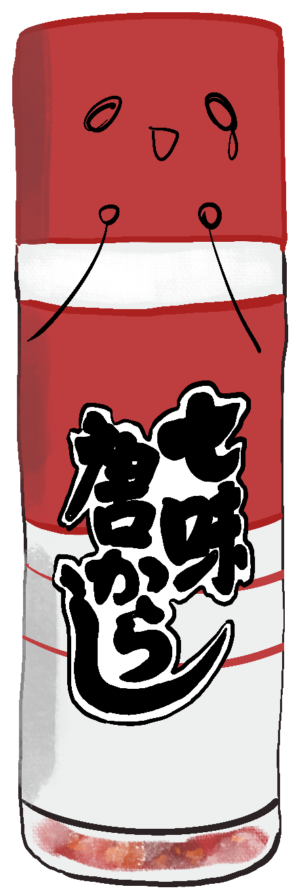

Hey yo，新來的，你應該不知道點數是什麼意思吧 哈哈 我來跟你介紹一下吧 ~ Sprint Point 目的是為了衡量速度，是用大概花費的時間預估出的相對點數！！
▼

 ▼ 接受挑戰！ ▼
▼ 接受挑戰！ ▼
恩...如同炸豬排醬說的，我這邊已經把剛剛討論好的點數標上去了... 你來練習把任務排到短衝待辦清單吧... By the way，我們平常管理任務是使用 Jira 這套軟體，你有時間記得先去註冊和熟悉唷